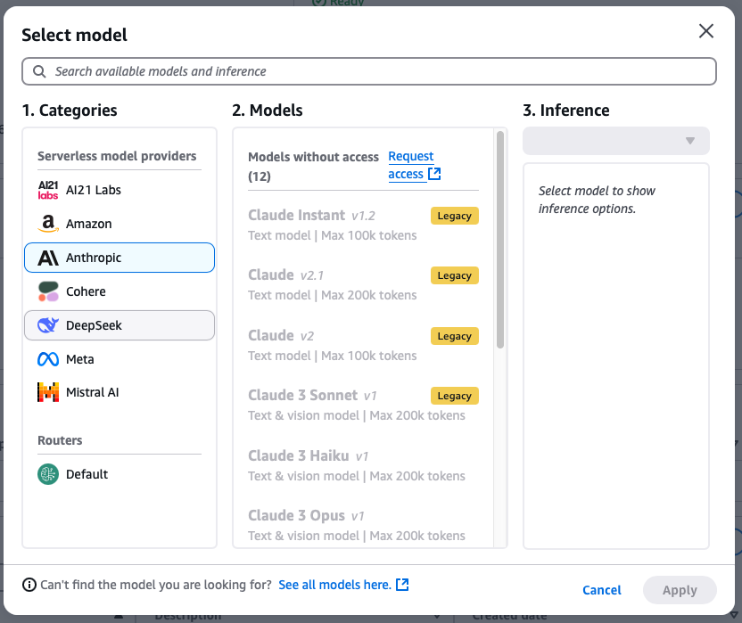

Guardrails for Amazon Bedrock
Config-Driven Model Onboarding
Context
Bedrock provides LLM inference APIs across multiple models. Guardrails scans user queries and model responses for unwanted content, masking or blocking it with replacement messages.

Guardrails model selector across modalities
Problem

Guardrails needed to parse and write to LLM response text — but each model had a different schema. The existing approach was hardcoded if/else parsing logic per model, embedded in a Bedrock team-owned package. Every code change required their review and deployment cycle. Onboarding a new model with a schema change took an estimated 3 weeks.
Solution

Decoupled model-specific logic into config files — each file defines the parsing pattern and skeleton response structure for a given model ID. Business logic loads the config at runtime, so onboarding a new model requires only adding a config file, with no changes to the Bedrock team's package.
Result

Onboarding time dropped from 3 weeks to config deployment. Bulk onboarding became possible — shipped 100+ Jumpstart catalog models for Guardrails at re:Invent 2024.